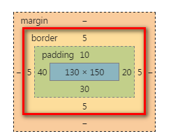

视口是浏览器的宽度. 电脑端视口宽一般是电脑的分辨率宽;
手机端的视口宽大部分默认是980, 可以通过一句视口约束的meta标签来设置手机端的视口.
手机端约束后的视口宽一般为320 - 380 px
这个meta标签参数:
参数1 : width = device - width ; 设置视口为设备宽度(手机出厂时所认为设置的一个宽度)
参数2 : intial-scale = 1.0 ; 初始化视口大小是1.0倍
参数3 : maximun-scale = 1.0 ; 最大的倍数是1.0倍
参数4 : user-scalable = 0 ; 是否允许用户缩放视口
为了美观,及充分利用手机屏幕, 手机网页一般没有版心, 都左右撑满.
百分比写 width 表示父元素width的百分之多少
百分比写 height 表示父元素 height 的百分之多少
百分比写 padding 表示父元素 width 的百分之多少,无论上下还是左右 padding
百分比写 margin 表示父元素 width 的百分之多少,无论上下还是左右 margin
border 不能用百分比来设置
css3中新推出了display : -webkit-box属性
对于拥有这个属性的盒子, 它的儿子盒子都是弹性盒了. 它的儿子们不需要设置float : left 就可以并排, 并且可以用数值来设置各自所占的比例, 目前该属性还需要加前缀"-webkit-"
父元素设置display : -webkit-box; 属性
儿子元素要设置 -webkit-box-flex : val; 值
box-flex 的值可以是任意数值, 只用来表示儿子元素们的比例关系, 与其它无关. 1 ,1,1 完全等价于 3, 3 ,3
直接对各个子盒子设置百分比的width值也可以按比例设置其宽度, 如设置3个子盒子width : 33.333% , 但是这种方式不直观, 所以引进了display : box; 属性
结果:
L
M
R
box-sizing 就是盒子的尺寸, 这个属性定义了给盒子设置的width, height 是内容的宽度还是border的宽度
默认是 box-sizing : content ; 即内容的宽度
box-sizing : border-box ; 是把设定的宽高指定为边框外侧的宽高, 这样盒子的border是固定的, 设置padding 后盒子会是内减的.
box-sizing在流式布局中非常好用. 因为宽高经常会以百分比来设置, 如果以内容作为宽高,在修改padding或border后就需要重新计算宽高值.
现在以border外侧作为宽高后把宽高设定为百分比后, 修改border,padding的值不会影响到页面的布局
css3中有新属性 "width : calc(50% - 10px)"
这个属性可以直接用于css中来计算宽高,并且可以用百分比, 只能做加减运算, 要带单位. 但是现在一般都不再用这个属性了
即两侧的盒子是固定宽度的, 中间的盒子宽度可以随页面的改变收缩扩张
手机站中, 有时候盒子的高度是固定的,宽度是百分比. 有的时候高度和宽度是等比变化的.
制作等比变化的盒子有4种方法
图片天生有个特性, 宽高可以等比变化. 利用图片的这个特性来撑高盒子, 盒子设置为浮动, 不设高度, 则会自动收缩为图片的高度. 那么盒子也是等比变化的
方法一: 利用图片的等比变化. 盒子1,2,3分别设置了20%,30%,50%的宽度
利用padding的百分比表示法是以父盒子的width为基准的属性. 对每个盒子以百分比设置width 和 padding - top 值. 这样每个盒子就是宽高等比变化的了. 再给每个盒子设置背景图即可
方法三: 当页面的宽度改变后, 用js来设置盒子的高度.
css中设置了每个盒子的百分比宽度
用js监听 window.onresize事件.当窗口宽度改变时,根据每个盒子的宽度来设置其height值
结果:
给父盒子加上 display : table ; 儿子盒子加上dispaly : table - cell 属性. 这样就会具有表格的属性, 宽高会等比例变化,并且能够并排
min-width : ; max-width : ;
em表示的是父元素的字号的倍数, 该属性是计算后继承,以父元素的字号为基础. em除了设置字号, 也可以用来设置盒模型的宽高尺寸
rem : css3中新增了rem属性, r 表示root
这个属性以html标签的字号为基准来设置. 不看父亲.
可以利用rem来设置盒模型的尺寸, 由于统一以html标签的字号为基准, 因此修改一下html标签中的字号, 就可以修改页面上所有以rem为单位的尺寸的改变
一般rem会设置为16px
css3 可以根据屏幕的宽度来设置css
媒体查询只能包裹选择器, 不能包裹k : v ;对儿
IE6,7,8不支持媒体查询, 同时也为了防止某些浏览器不支持媒体查询, 所以不要把所有可能的情况都放在媒体查询里. 要留出一些情况在媒体查询外面, "留活口"
外链样式表也可以在link标签上应用媒体查询：